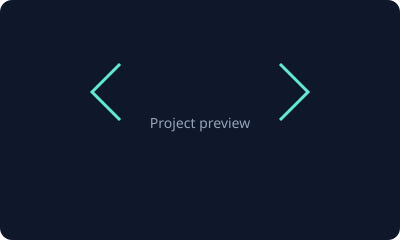

Styled landing page
Single-page site with hero, sections, flex and grid, form, and breakpoints for mobile through desktop.
Open projectBM Web Studio
I design and ship accessible, maintainable sites—migrations, CMS architecture, and front-end polish—with a focus on long-term quality.

Three builds from this portfolio—semantic HTML, CSS, and responsive layouts.

Single-page site with hero, sections, flex and grid, form, and breakpoints for mobile through desktop.
Open projectContent-heavy bio with skills grids, lists, and a contact form—practice in semantics and hierarchy.
Open projectThis page: Bootstrap grid, responsive nav, skills indicators, accordion, and motion-aware details.
You are hereVisual indicators for strengths I lean on most in client work (illustrative, not a test score).
Webflow & HTML/CSS
Accessibility & QA
JavaScript
CMS & content structure
Founder of BM Web Studio, with 13+ years in web development and 7+ years focused on Webflow—plus deep QA, accessibility, and migration work.
I help teams modernize sites, tighten CMS patterns, and ship experiences that stay fast and maintainable. This bootcamp stretch adds structured HTML/CSS practice alongside my production habits.
Reach out for Webflow work, QA, or accessibility support—or say hello.